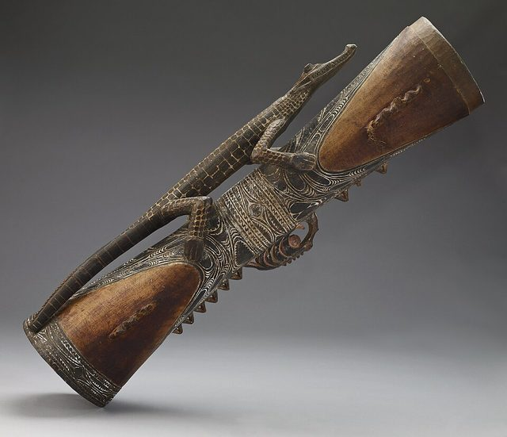

Home / Modern Heritage / Pacific and Oceania
Playable heritage gameKundu drum
Also known as kundu
The kundu is a tall hand drum of Papua New Guinea, carved from a single piece of wood with a narrow waist, a grip at the middle and an open foot. A stretched hide covers the top and a lump of black paste tunes it; the body is cut with bands of triangles and chevrons painted in ochre, white and black.


How to play
- The drum stands upright: the hide on top, the carved grip at the waist and the open foot at the bottom.
- Centre is the middle of the hide and Edge the ring round it. Grip is a knock on the carved waist and Mouth a deep stroke over the open foot.
- A ring closes on the place to strike. Strike as it lands.
- Begin with the centre strokes, then add the edge and the grip.
Rules at a glance
- A stroke on the beat is perfect, a near one is good, and extra strokes cost points.
- Each pattern repeats twice.
- The patterns count four beats to the bar.
About the tradition
Kundu drums are carved and tuned by their players, and the patterns cut into the wood often belong to a family or a place. The drum is held by its grip and played for dances and songs, its pitch set by the paste on the hide.
Origins
Usually placed in the era of Modern Heritage (1800 to today), although its exact origins are uncertain, within the cultural world of Pacific and Oceania.
Credits
- Tradition: the Kundu; patterns written for this game
- Photo: not named; photo was listed as being in the public domain in its image information page at the Minneapolis Institute of , Public domain, source on Wikimedia Commons
- Text: CC BY-SA 4.0, World Heritage Games.
Sources

Get the app
Kundu drum is coming to the App Store and Google Play. One app, many traditions, no account needed.
Included in Asian & Island Percussion
More games to play


More from Papua New Guinea

Highland and coastal contests
Papua New Guinea · Street and playground gamesVillage rugby league
Papua New Guinea · Street and playground games